RapidDrive — VCR Manager
VCR Manager is a 3ds Max tool for rendering vehicles in many variants without ever configuring the scene by hand. You describe each deliverable once — as a Render Pass — and the tool takes care of switching the scene into the right shape for it: which layers are visible, which materials each zone wears, how the lights behave, what the camera, frame range and resolution are, and where the frames go. Then you render locally or submit the whole set to Deadline or Chaos Cloud in one click.
It is built around five kinds of reusable building blocks — Layer States, Material Zones, Light Rules, Object Properties and Animation Sets — which passes combine like ingredients. Change an ingredient once and every pass that uses it updates.
Getting Started
Requirements
- 3ds Max (tested on 2023) with MAXScript
ObjectListView.dll(bundled inlibs/— loaded automatically)
Running the tool
- MAXScript > Run Script and select
VCRManager.ms, or - in the MAXScript Listener:
fileIn @"...\VCRManager.ms"
The Main Window
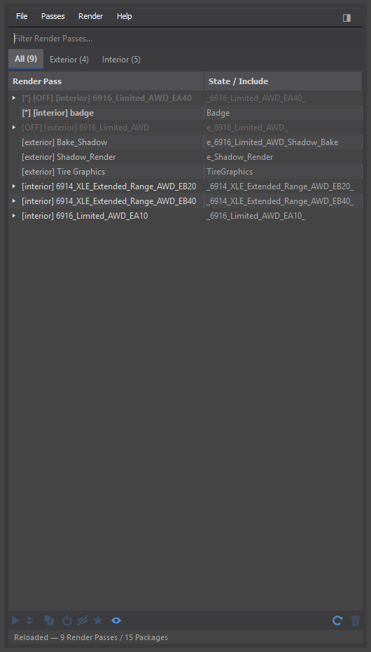
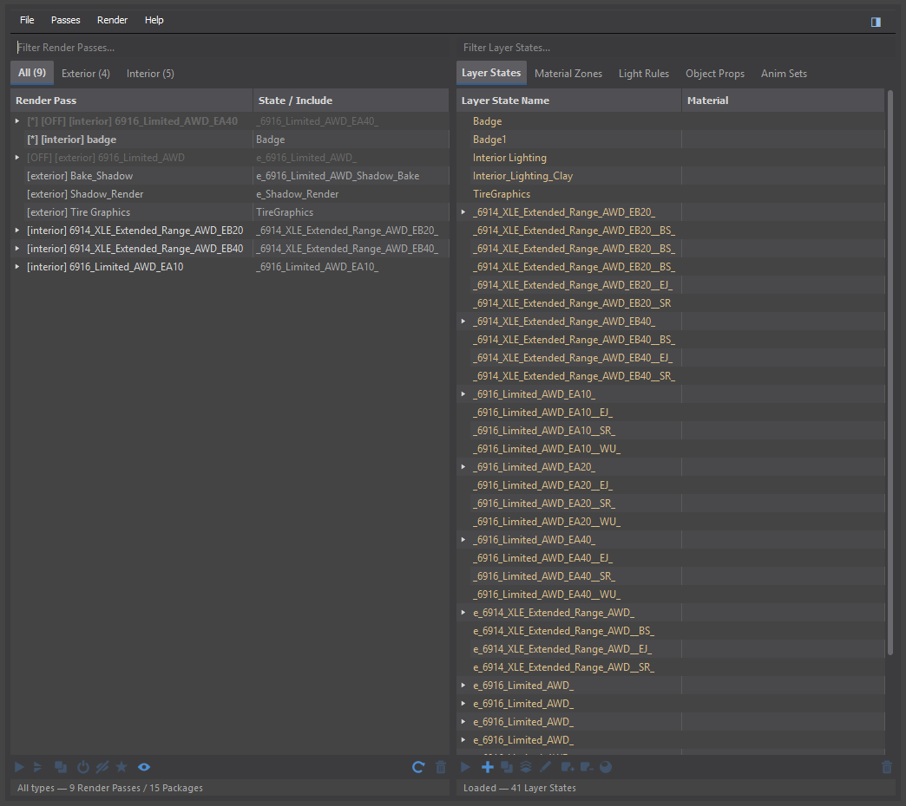
Each column reads top-to-bottom the same way:
- Search bar — filters the list below as you type. Left filters passes, right filters whatever tool is open.
- Tabs — on the left, All / Exterior / Interior filter passes by type (with live counts). On the right, tabs switch between the five side tools. The blue accent marks the active tab. Clicking the active side tab closes the panel.
- The list — with slim dark scrollbars; drag the thumb, click the track to page, or use the mouse wheel.
Menu bar
| Menu | Contents |
|---|---|
| File | Project Settings, Dock Left/Right, Undock, Remove All RapidDrive Data |
| Passes | Add/Clone/Delete Pass, Build from FBX/Scene, and the five side-tool managers |
| Render | Preview, Local Machine, Submit to Deadline, Submit to Chaos Cloud |
| Help | About & this documentation |
Render Passes
Render Passes are the heart of the tool. Each pass is a complete recipe: a layer state, lighting state, camera, frame range, resolution and output name. Apply a pass and the scene snaps into that configuration; render it and you get that deliverable.
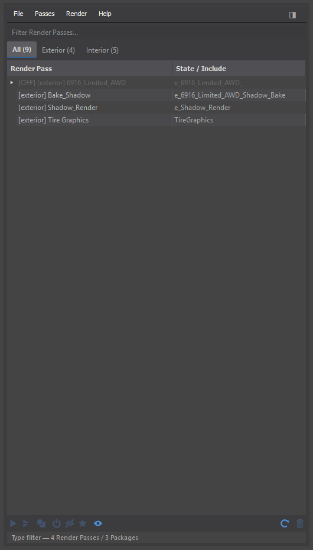
Hierarchy
- Base Pass — a root-level pass with its own state assignment. Typed exterior or interior.
- Package Pass — a child of a Base Pass that layers include/exclude overrides on top (option packs, trims, markets).
Creating and editing
- Right-click > Add Base RenderPass (or the Passes menu). Select a Base Pass first to add a Package under it.
- Double-click a pass to apply its configuration to the scene.
- Right-click > Pass Settings for the full editor, or Quick Pass Settings for a fast minimal one.
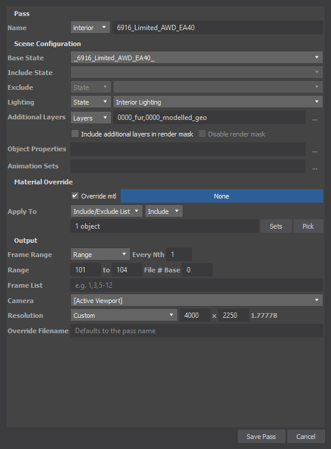
Animation range syntax
| Format | Example | Result |
|---|---|---|
| Single frame | 10 | Frame 10 |
| Range | 1-100 | Frames 1–100 |
| Every Nth | 1-100:5 | 1, 6, 11 … 96 |
| List | 1,5,10,20 | Those frames |
| Mixed | 1-10,20,30-50 | Any combination |
Layer States
A Layer State is a named snapshot of layer visibility — which layers are on. States can also carry zone entries: per-state material assignments for Material Zones. Applying a state therefore switches both the visible geometry and the variant materials in one step.
Creating and managing
- Right-click > Create New State, name it, tick the layers that belong to it.
- Double-click a state to apply it. The active state is highlighted in the list.
- Right-click for Rename / Clone (zones and materials included) / Remove, and for Viewport / Selection submenus that replace, add or remove layers from the state based on what is visible or selected.
- Insert creates a state, Delete removes the selected ones.
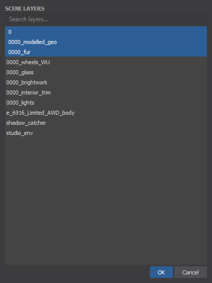
Zone entries
Zone child rows under a state show its material assignments. Click a zone row's Material cell to pick from a dropdown of the material library and scene, or right-click for Pick / Copy / Paste / Clear. Scan Scene for Zones populates entries automatically from the scene.
Material Zones
Material Zones group objects whose material changes together — all painted body panels, all glass, all brightwork. States assign materials per zone, so a new colourway is just a new state with different zone materials.
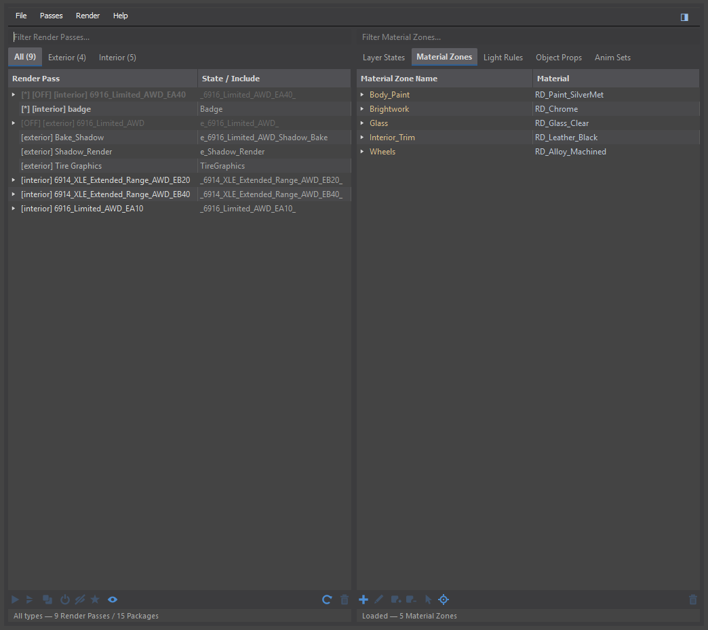
Creating and managing
- Select geometry, right-click > Create Zone from Selection, name it.
- Add or remove member objects, rename or delete zones from the right-click menu.
- Select Zone(s) from Scene and Select Object(s) in Scene bridge between viewport selection and the zone list.
- Zones appear dimmed when none of their objects are on layers visible in the current state.
Assigning a material directly New
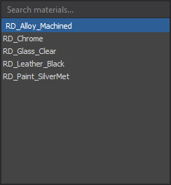
- Click the Material cell of a zone row and choose from the dropdown (library materials first, then scene).
- The pick is applied to all member objects of the zone — including any hidden by a search filter — and is a single undoable action.
- If the active state also assigns that zone, the tool offers to update the state's assignment to match — otherwise re-applying the state would put the old material back.
Light Rules
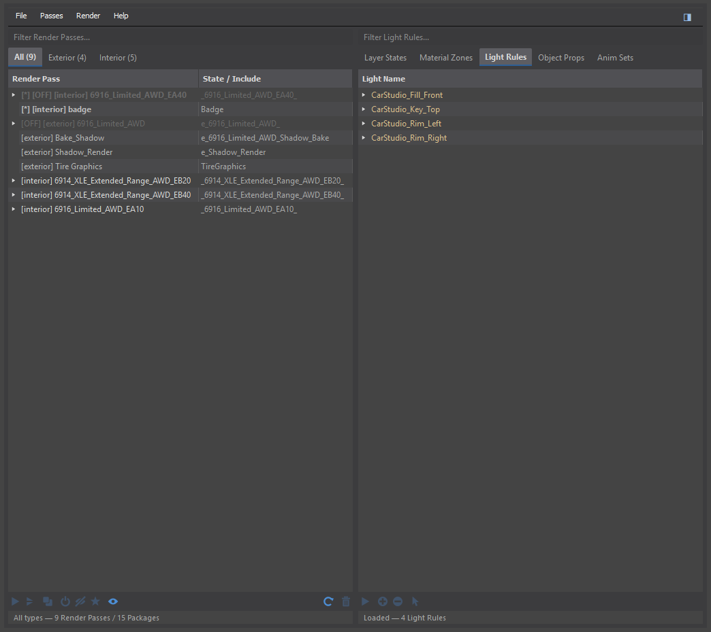
Light Rules control which objects each light affects. Every light appears with five category children — Layers, Materials, Selection Sets, Layer States, Material Zones — and the tool resolves them into the light's include/exclude list.
- Right-click a light to switch between Include (light only affects listed objects) and Exclude (light ignores them), and whether the rule affects Illumination, Shadow Casting or both.
- Right-click a category to Set (picker with filter and pre-selected current items) or Clear it.
- Re-apply Rules recomputes lists from current scene data; Clear All Rules resets a light.
Object Properties
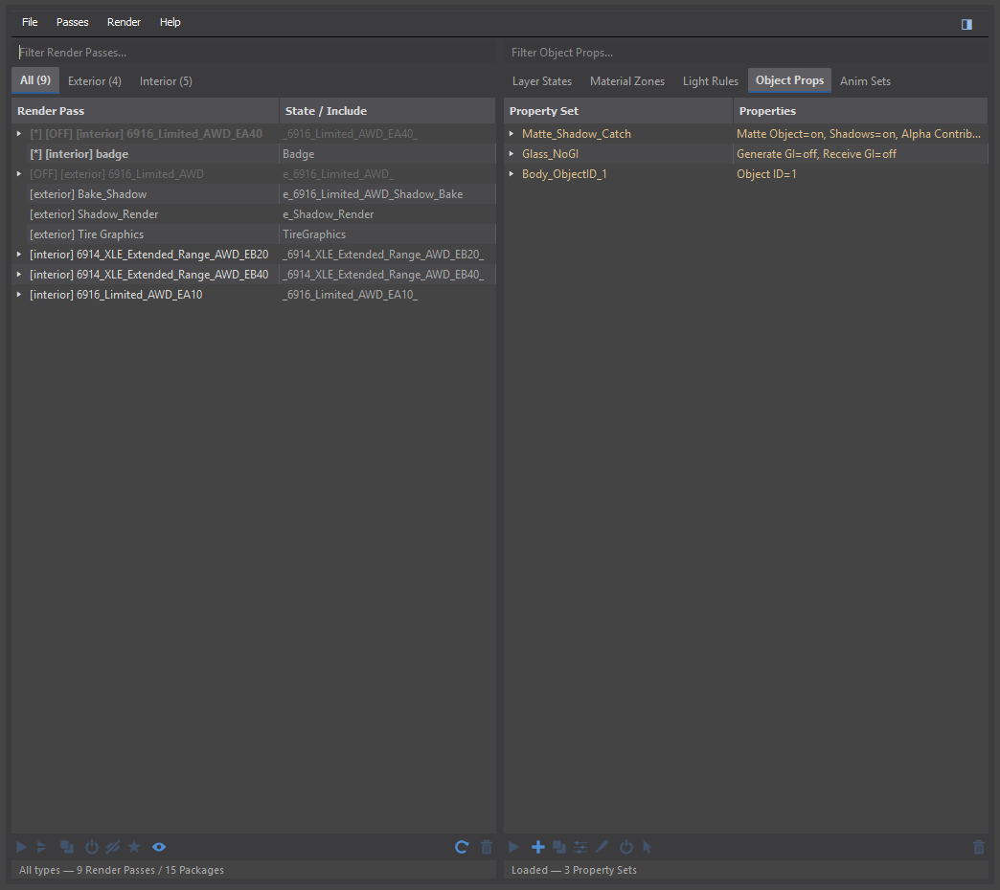
Object Property Sets override V-Ray and Max object properties (matte settings, visibility flags, GI, Object ID) for groups of objects, per render pass. Target objects by layers, materials, selection sets, states or zones; enable only the properties you want to override in Edit Properties.
Animation Sets
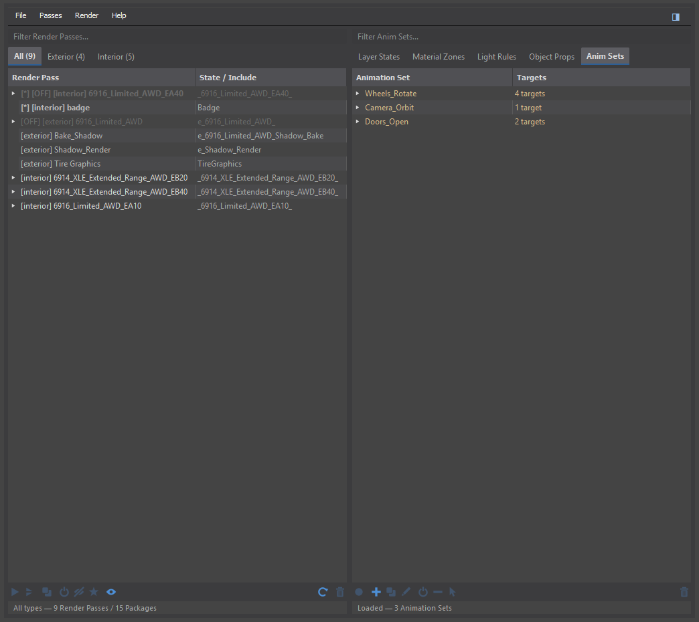
Animation Sets store keyframed motion (with tangents preserved) for named groups of targets, and are applied per pass via Pass Settings. A pass with an animation set gets its motion applied before rendering; the tool restores original controllers on save so baked animation never leaks into the scene file.
Rendering & Submission
Preview & local rendering
Render > Preview applies and renders the selected pass in the viewport renderer. Render > Local Machine renders selected passes in sequence — each pass configuration is applied, then rendered with its own time, size and camera.
Deadline
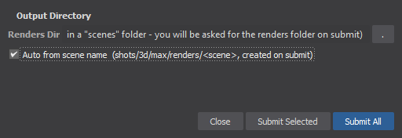
- Submit Selected sends the selected passes; Submit All sends every pass in the scene — regardless of any type tab or search filter active in the UI.
- Disabled passes and passes with missing states are skipped, with a summary of what was skipped.
- Each pass is submitted as its own job with a saved scene snapshot, so farm renders match exactly what the pass defines.
Chaos Cloud
Render > Submit to Chaos Cloud… exports .vrscene files per pass and hands them to the Chaos Cloud client. Configure the client path, output suffix and cache folder in the dialog.
Build from FBX
Passes > Build from FBX… imports a SmartBuild FBX and generates the whole VCR setup automatically: layers from the hierarchy, then Layer States, Material Zones and Render Passes from the custom attributes carried by the FBX.
| Field | Required | Description |
|---|---|---|
| Base Grades | Yes | FBX with base model variants (helpers with .grades attributes) |
| Packages | No | Additional FBX with package options, merged into the base |
| Max File | No | Where to save the resulting .max |
| JSON File | No | Legacy pass/grade definitions |
Build from Scene
Passes > Build from Scene… rebuilds States, Zones and Passes from custom attributes already present on scene objects — no FBX needed. Useful after manual scene surgery. Existing States and Passes are overwritten (confirmation first).
Project Settings
| Setting | Description |
|---|---|
| Material Library | Path to a .mat file used for material references |
| Material Priority | Whether zone materials prefer the Library or the Scene |
Data Storage
| Data | Stored in |
|---|---|
| Render Passes, project settings, submission config | rootscene.toyotaVCREditorSettings (XML in the scene file) |
| Layer States and zone assignments | rootscene.foeStatesSettings (XML in the scene file) |
| Zone membership | Custom attributes on geometry |
| Light rules | Custom attributes on lights |
| External tool paths | (getDir #plugcfg)\Toyota_VCR_Manager.ini |
Everything travels with the .max file — opening the scene on another machine brings the full VCR setup with it.
Tips & Shortcuts
- Double-click a pass or state to apply it.
- Insert / Delete on the Layer States tab create/remove states.
- Clicking the active side tab closes the panel; the Passes menu does the same.
- Search boxes filter live and combine with the type tabs; while filtering a picker dialog, your existing selections stay pinned and safe.
- The zone Material dropdown is the fastest way to try a colour across a whole zone — and it's one undo step.
- Hidden rows are included in searches, so you can always find a hidden pass by typing its name.